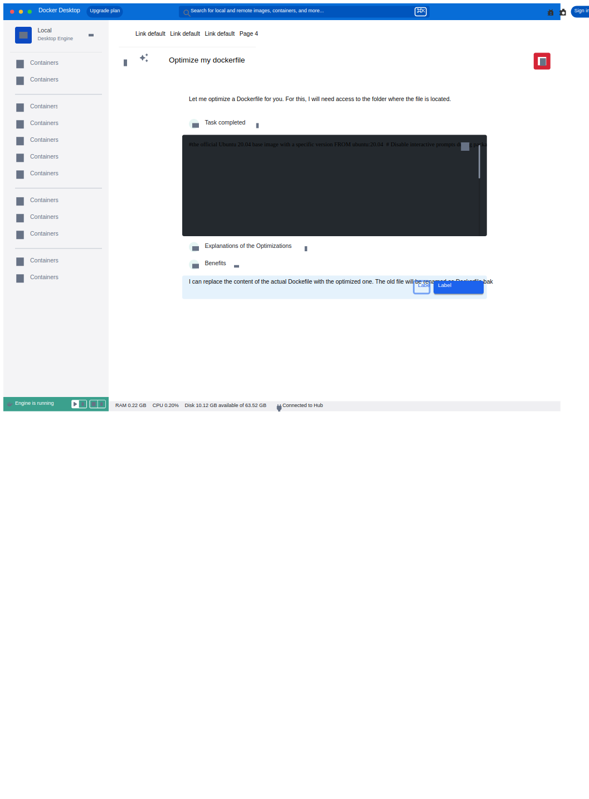
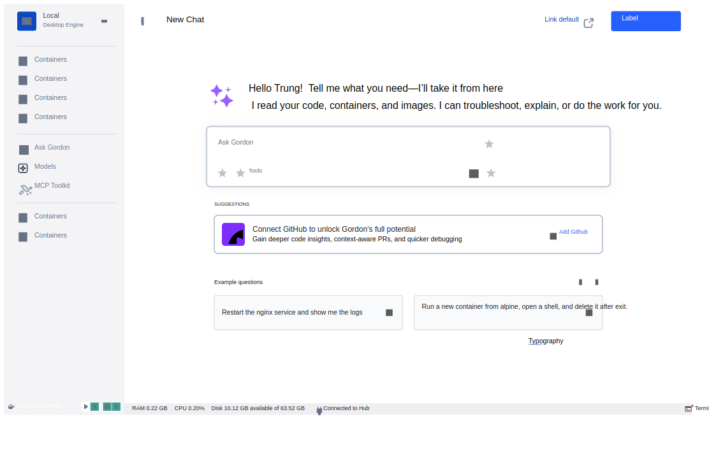

From a 69-user prototype to ~119,700 monthly active users.
Docker · Design lead, end-to-end2024–2026
Ana · Sam · Marco · DanaAI-curious · newcomer · safety · pricing
Context
Docker needed an AI assistant meeting developers where they work — Desktop and CLI — with no separate chat tool, and no unsafe agent actions on their machine. A true 0→1 bet: no established pattern, no existing users.
Role
Interaction model · onboarding · safety & permission UX · billing & GA flows · support integration · the feedback research pipeline.
Jobs-to-be-done
“Ask about my containers/images/compose without leaving Docker.” → Gordon in global search and the Containers/Images/Volumes tabs.
“Let the agent act — but never do something destructive without my okay.” → Danger classification (cautious/safer tiers), allow/deny dialog, CLI hook. The safety pattern became the reference for other agent dialogs across Docker.
“Understand what Gordon costs and which plan I need.” → Budget/token views, plan mode, pricing.
“Get started without reading docs.” → Onboarding + login nudge.
“Tell Docker when Gordon gets it wrong.” → In-product Qualtrics feedback → permalink → Slack routing.
Process
Authored the continuous research plan; stood up the feedback pipeline; iterated free/blocked states, JIT nudges and permission tiers across releases; shipped V2 GA + pricing (Apr 2026), GA with Desktop 4.74 (May 2026), and again in 4.80 (Jul 2026).
Research
Gordon started from evidence, not enthusiasm. Support tickets, the feedback channel and usage telemetry showed developers asking Docker questions in three places they already trust: global search, the Containers view, and the terminal. Baseline engagement sat at 69 MAU before any assistant existed, and the interviews mapped cleanly onto the portfolio personas: Ana (AI-curious developer), Marco (safety-minded platform lead), Sam (newcomer), Dana (budget owner).
The jobs people actually voiced: “ask about my containers without leaving Docker”, “let the agent act, but never destroy anything without my okay”, and “tell me what this costs me”.
Conceptualization
The first decision was structural: an embedded, context-aware assistant rather than a separate chat surface. Gordon reads the container/image/volume context you are already looking at, which beats a general chat tool on relevance but caps its reach to Docker surfaces. That trade was made deliberately.
The safety concept became the defining artifact: a danger classification (cautious vs safer tiers) rendered as an allow/deny dialog with scoped grants. The permission flow was iterated in the open, from temporary read grants to explicit write confirmations, and the pattern later became the reference for other agent dialogs across Docker. Onboarding and budget explorations ran in parallel as free/blocked-state flows.
UX use cases
Each card defines the job, the design response, the objective, the measured outcome, and the trade-off made.
Gordon embedded in global search and the Containers/Images/Volumes tabs.
“Ask about my containers without leaving Docker”
Objective
Meet developers in the surface they already trust; no separate chat tool.
Outcome
69 → ~119,739 MAU (Nov 2024 → Jun 2026), ~13× step-up at the Ask Gordon launch; requests ~193K → ~4.3M/month.
Trade-off
Embedded context-awareness beats a general chat surface but caps Gordon's reach to Docker surfaces.
“Let the agent act, but never destroy anything without me”
Objective
Make “agent acts on my machine” shippable to safety-minded users (Marco).
Outcome
The permission pattern became the reference for other agent dialogs across Docker.
Trade-off
Every risky action costs a prompt; friction accepted as the price of trust.
Budget and token-usage views, plan mode, pricing surfaces.
“Understand what Gordon costs me and which plan fits”
Objective
Make monetization legible before it becomes a billing surprise.
Outcome
~$260 MRR shortly after GA, exceeding some established Docker products.
Trade-off
Surfacing spend invites objections; hiding it would erode trust at the worst moment.
Onboarding flow, login nudge, plan mode.
“Get started without reading docs”
Objective
Carry a 13× growth step without a support/docs cliff.
Outcome
Onboarding + JIT nudges shipped through iterative free/blocked-state explorations.
Trade-off
JIT nudges risk feeling like ads; kept them tied to blocked states only.
Design screens
Exported from the original Figma files with figx.
Ask Gordon with tools panel and agent flow canvas (exploration)Permission flow: temporary read grant

Permission flow: confirmation before replacing the Dockerfile

New chat empty state with suggestions (shipped onboarding)
Measurement
69 → 119,739MAU, Nov 2024 → Jun 2026
~13×step-up at Ask Gordon launch · 4.38: 3,637 → 46,315
~193K → 4.3Mrequests / month
~$260 MRRshortly after monetization
Growth reflects many contributors — design was a necessary enabler. “Requests” include background agentic calls. Figures approximate, current to Jul 2026.
Reflection
Proudest of the safety UX — it made “let the agent act” shippable, and propagated to other products.